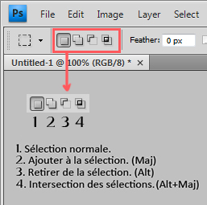

Introduction à Photoshop
L'article qui va suivre est une introduction à Photoshop et présente un certain nombre d'outils, dont les calques (leur fonctionnement est similaire dans des logiciels comme Painter ou PaintShopPro). En espérant qu'il sera utile à ceux qui se lancent dans le graphisme :]

Photoshop
Quand vous ouvrez Photoshop, à quoi ça ressemble ?
Un grand fond gris, une barre d'options et plein de fenêtres mobiles. Je vous conseille de les fermer et de ne garder que celles qui vous intéressent (pour ouvrir une fenêtre, il suffit de cocher son nom dans le menu Fenêtres). Je vous conseille de garder uniquement la boîte à outils et la fenêtre des calques, du moins pour commencer.
La boîte à outils
La boîte à outils contient les habituels pinceaux, pot de peinture, sélection, etc. ainsi que deux petites cases pour choisir vos couleurs. Faîtes attention cependant, chaque icône correspond à plusieurs outils ! Pour changer l'outil sur une icône, faîtes Alt+Clic dessus ou utilisez le clic droit. Ainsi, le pot de peinture et le dégradé ont la même icône. Pour sélectionner une couleur, cliquer sur la case où vous voulez la mettre pour faire apparaître un menu de réglage.
Quand un outil est sélectionné, les options de réglage s'affichent en haut. Le clic gauche permet de l'utiliser. Le clic droit ouvre un menu qui dépend de l'outil. Le plus utile : pour le pinceau, il ouvre la liste des brushs, c'est-à-dire des types de pinceaux et propose une jauge pour régler la taille du pinceau.
Pour régler plus précisément les brushs, vous pouvez utiliser le menu approprié en appuyant sur F5. Vous aurez alors accès à toutes les options de réglage possibles et imaginables : opacité, taille, dispersion, texture, etc. Je ne les présenterai pas ici mais la plupart des options sont explicites. Les autres nécessiteront un peu d'expérimentation de votre part :]
Petite astuce pour tracer des traits : maintenir Maj permet de tracer des traits horizontaux ou verticaux. Si vous placez un point, puis maintenez la touche Maj enfoncée et cliquez à un deuxième endroit, Photoshop trace automatiquement le segment qui relie les deux points. Très utile pour les bâtiments ou le mecha design par exemple.
Il existe des raccourcis pour sélectionner un outil sans passer par la boîte à outils. Pour les voir, laisser votre curseur sur l'icône d'un outil. S'il y en a un, il sera indiqué entre parenthèse. En voici quelques uns :
- B (Brush) : le pinceau ou le crayon de base
- E (Eraser) : la gomme
- M : la sélection
- Z (Zoom) : la loupe (vous pouvez utilise Ctrl++ et Ctrl+- me souffle Fil)
- P : la plume
- W (Wand) : la baguette magique
- L (Lasso) : le lasso
La fenêtre des calques
La fenêtre des calques permet, comme son nom l'indique, de gérer les calques. Mais qu'est-ce qu'un calque ?
L’intérêt principal d’un logiciel comme Photoshop par rapport à Paint, c’est qu’il permet d’utiliser ce qu’on appelle des calques : on peut en effet séparer le dessin en plusieurs « couches » à sa guise, les fameux calques, qu’on peut gérer simplement à l’aide du petit menu Calques. Par exemple, pour plus de commodité, je peux choisir de séparer le lineart et la couleur pour travailler sur une illustration.
La fenêtre des calques montre la liste des calques par ordre d'affichage (le premier de la liste est le calque le plus « au-dessus » du dessin. A gauche de chaque calque, une petite case à cocher avec un œil dessus permet d'afficher ou de masquer les calques. En haut, on peut régler l'opacité du calque et choisir son mode — nous verrons ce dont il s'agit dans la suite de l'article. Pour changer l'ordre des calques, il suffit de faire un cliquer-glisser et de déposer le calque là où vous le souhaitez.
En bas de la fenêtre, plusieurs icônes sont disponibles. Nous allons en présenter trois.
- La poubelle permet de supprimer un calque : il suffit de faire glisser le calque dessus ou alors de cliquer dessus après avoir sélectionné le calque.
- La petite feuille de calque pliée permet de créer un nouveau calque.
- Le petit dossier permet de créer un groupe. C'est un dossier dans lequel vous pouvez ranger vos calques. Ceci est très utile quand vous travaillez sur des illustrations avec beaucoup de calques. Par exemple, vous pouvez créer un groupe Décor où vous mettrez tous les calques liés au fond de l'image. Il vous sera alors possible de réduire le groupe ou même de le masquer.
Dans les versions récentes de Photoshop, on peut sélectionner plusieurs calques en même temps, par exemple pour les déplacer ou leur appliquer une symétrie. Ctrl+Clic permet d'ajouter un calque à la liste des calques déjà sélectionnés.
On peut afficher et masquer la fenêtre des calques avec la touche F7.
Le fonctionnement des calques.
Une particularité des calques est ce qu’on appelle les modes : en modifiant le mode d’un calque, on va pouvoir modifier la façon dont il va se superposer avec les autres. Par exemple, le mode Normal est celui de base, où les couleurs se superposent simplement. Il en existe beaucoup et il vous faudra les tester pour comprendre leurs effets. Par exemple, les modes Densité Linéaire – et Incrustation sont extrêmement pratiques pour les effets lumineux. Un calque noir en mode Couleur au dessus d'une illustration vous permettra de la voir en niveaux de gris sans toucher à l'image elle-même.
Parlons maintenant du verrouillage. Mais d'abord, qu'est-ce ? Le verrouillage est une option pratique pour travailler proprement. Vous avez sans doute remarqué qu’après avoir posé vos à-plats de couleur, il est difficile de peindre correctement dessus sans déborder, ce qui nécessitera plus tard un fastidieux détourage. Pour éviter ceci, sélectionnez le calque où se trouve vos à-plats dans le menu Calques et cochez la petite case représentant un damier (si vous laissez la souris dessus, vous pourrez voir le mot Verrouillage apparaître). Un petit cadenas apparaît à côté du nom du cadre. Ainsi, lorsque vous peindrez sur ce calque, la couleur ne sera modifiée que sur la zone déjà colorée et pas ailleurs. Si vous voulez par la suite peindre hors de l’aplat, il vous suffit de déverrouillez le calque en re-cliquant sur l'icône en forme de damier.
Il existe d'autres formes de verrouillage : ce sont les autres petites icônes à côté du damier. A vous de les tester ! Le calque le plus bas (l’arrière-plan) est verrouillé par défaut
Masque et sélection
Un autre avantage de Photoshop est l'existence de sélections « intelligentes ». Contrairement à Paint, lorsque vous sélectionnez une zone de l'image, vous pouvez retravailler la zone de sélection.
La sélection (M) permet de sélectionner des formes simples : rectangles, ellipses, verticales, horizontales. Maintenir la touche Maj enfoncée permet de tracer des carrés si vous avez choisi une sélection rectangulaire, des cercles si vous avez choisi une sélection elliptique.
Le lasso (L) permet de sélectionner un tracé dont vous dessinez le contour. Le lasso magnétique repère les bords dans une image et vous permet de détourer facilement.
En haut à gauche, dans les options de la sélection ou du lasso, il y a quatre petites icônes :

- En maintenant Maj, vous pourrez ajouter de nouveaux éléments à la sélection.
- En maintenant Alt, vous pourrez retrancher de nouveaux éléments à la sélection.
- En maintenant Maj+Alt, vous pourrez récupérer l'intersection des deux sélections.
Avec ceci, vous devriez pouvoir récupérer des sélections même très complexes. Mais on peut faire encore plus élaboré : parlons maintenant des masques.
Regardez en bas de la boîte à outils, sous la sélection de couleurs : vous pouvez voir côte à côte deux rectangles avec un cercle au milieu, dont l’un est coché. Celui qui est coché corresponde au mode Normal, l’autre au mode Masque. En mode normal, vous peignez comme d’habitude avec toute votre gamme de couleurs. En mode Masque, vous n’avez que du noir et du blanc et quand vous peignez, le noir apparaît en rouge : étrange me direz vous.
Mais à quoi cela sert-il donc ? En repassant du mode Masque au mode Normal, l’image que vous aviez dessinée en noir et blanc en mode masque va être transformée en une sélection. Mais pas n’importe laquelle : les pixels sont « plus ou moins sélectionnés » en fonction de la luminosité de votre dessin. Pour être plus clair, si le pixel était peint en blanc (ou rien du tout) en mode Masque, il est sélectionné à 100%, s’il était peint en noir (ce qui apparaîtra donc rouge) en mode Masque, il sera sélectionné à 0%. Et c’est là que ça devient intéressant : entre les deux, vous disposez d’une foultitude de nuances de gris. Si un pixel est gris à 50%, il sera sélectionné à 50% et donc si vous lui appliquez un effet, il le subira à 50%. Par exemple, si vous faites une sélection dans le mode Masque puis que vous faites Suppr dans le mode Normal, les pixels marqués de rouge pur (noir) ne seront pas touchés, les pixels sans marque (blanc) seront totalement supprimés et les pixels marqués de rouge intermédiaire (gris) seront plus ou moins supprimés. Ça peut paraître très compliqué dit comme ça, mais essayez directement dans Photoshop, c’est très simple.
Quelques raccourcis
Les classiques
- Ctrl + N : créer un nouveau fichier .psd
- Ctrl + O : ouvrir un fichier
- Ctrl + S : enregistrer
- Ctrl + Maj + S : enregistrer sous
- Ctrl + X : couper
- Ctrl + C : copier
- Ctrl + V : coller
L'affichage
- Ctrl + U : menu de réglage des couleurs
- Ctrl + R : afficher/masquer les repères sur les côtés
- Ctrl + " : activer/désactiver le magnétisme
- Ctrl + ' : afficher/masquer la grille (vous pouvez la paramétrer en allant dans Editions, puis Préférences)
- Tab : afficher/masquer les fenêtres
- F : change le format de la fenêtre (en utilisant Tab et F, on peut réussir à ne faire apparaître que le dessin sans rien d'autre à l'écran :D)
Pour travailler
- Ctrl + Maj + U : désaturation de l’image
- Ctrl + D : désélectionner (pensez y si tout d’un coup vous n’arrivez plus à peindre, c’est peut-être tout simplement parce que vous avez laissé une petite sélection quelque part)
- Ctrl + E : fusionner le calque sélectionné avec le calque de dessous
- Ctrl + Maj + E : fusionner tous les calques visibles
- Ctrl + T : mode transformation manuelle (pour étirer l’image, la pivoter, la réduire, l’agrandir, etc.)
- Ctrl + Maj + C : copier en une image tout ce qui est visible à l’écran (si vous vous contentez d’un classique Ctrl+C, Photoshop copiera seulement le contenu du calque sur lequel vous êtes)
- Alt + clic : utiliser la deuxième fonction de l’outil (extrêmement utile pour le shading avec le pinceau et le crayon, car il permet d’utiliser très rapidement la pipette et de sélectionner les teintes intermédiaires d’un dégradé)
Mention spéciale, l'historique
- Ctrl + Z : switcher entre l’état actuel et l’état antérieur.
Attention, ce n’est pas le Ctrl+Z habituel. Imaginons que vous êtes à l’état n. Faire Ctrl+Z une fois vous enverra à l’état n-1, faire Ctrl+Z une deuxième fois ne vous emmènera pas à l’état n-2 mais vous ramènera à l’état n. Une troisième fois vous renvoie sur l’état n-1, et ainsi de suite. Une fois de plus, c’est difficile à expliquer, mais très simple à comprendre : essayez par vous-mêmes :] - Ctrl + Alt + Z : retour à l’étape précédente (le classique « Undo »)
- Ctrl + Maj + Z : rétablir une action
Ceci étant dit, je vous souhaite bon courage pour la suite :]
Ajouter un commentaire
Commentaires

@anonyme > J'imagine que vous ne lirez jamais ce commentaire mais tant pis. Les Forges ne vous empêchent absolument pas de revenir à votre recherche google (je viens d'en faire le test, et de toute façon je le saurais vu que j'ai codé ce site).
Il est possible que vous soyez tombé sur un lien vers un article de l'ancienne version du site, auquel cas vous avez été redirigé ici par un en-tête HTTP approprié – que votre navigateur a correctement interpété. Suite à une telle redirection il faut cliquer deus fois sur le bouton précédent du navigateur pour revenir à la page effectivement précédente dans l'historique de navigation. Avant de venir nous jeter des pierres il faudrait songer à apprendre comment fonctionne votre navigateur internet.

Je ne supporte pas ces sites comme le votre, qui nous empêchent de revenir à notre recherche précédente sur google, et nous ramène systématiquement sur leur page. Je le mets dans mes indésirables.
Vu mon niveau en informatique (j'ai déjà du mal avec Pain :O), utiliser Photoshop ne sera pas facile au début mais quand je vois les possibilités qu'il offre, je n'ai qu'une envie c'est de m'y mettre! Merci pour ces explications, je tâcherai de les mettre en pratique.